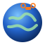

Loading the globe…
Google's 3D cities have daylight baked into their photos, so night darkens the sky and the plain globe but not the buildings themselves.
From OpenStreetMap. Buildings load when you're within about 5 km of the ground. Heights are estimated where OSM has none, and coverage varies by area.
Plug in your radio (USB joystick mode) or a gamepad and move a stick so the browser sees it. Press F8 to run the radio setup wizard.
Keyboard fallback: W/S throttle, A/D yaw, arrow keys pitch/roll, Enter arm, T turtle.